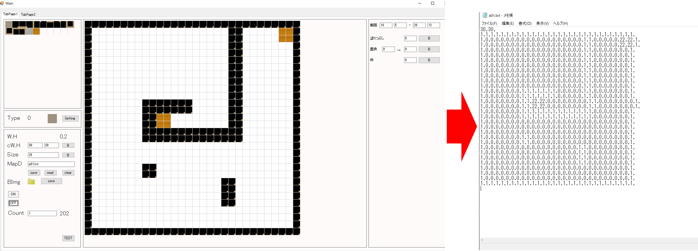
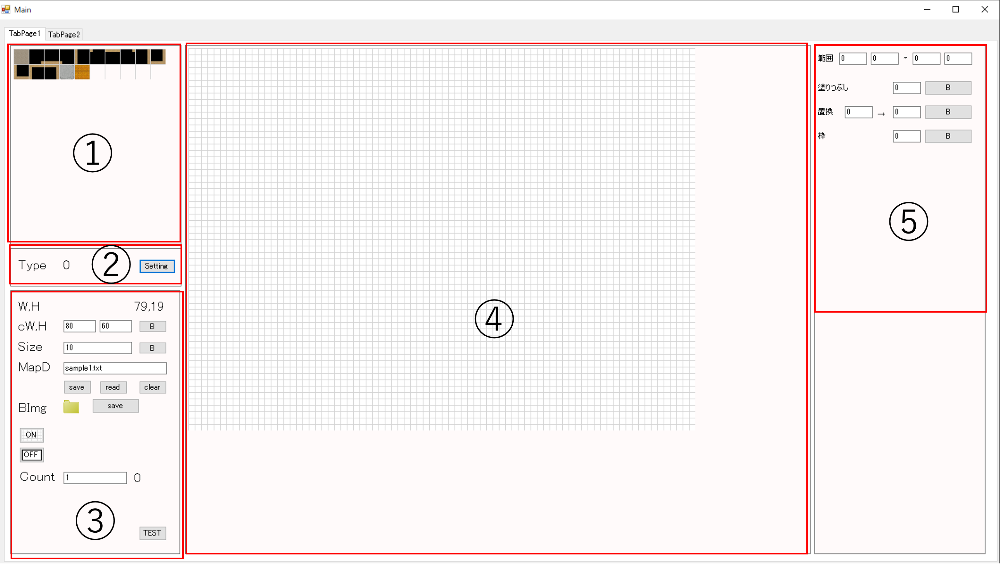

VB.netでマップエディタを作成
使用言語：VisualBasic.net
人数：1人
期間：3ヵ月程度
開発環境：windows,VisualStudio
下図のように簡単にマップ用のデータを作成することができます。

-操作説明-

setting/InitConfiguration.txt：初期設定用の ファイル
| COL_NUM=80 | 横ブロック数 |
| ROW_NUM=60 | 縦ブロック数 |
| BLO_SIZE=10 | ブロックのサイズ |
| backbmpfilename=siro.png | 背景画像 |
| MapChipSetFile=setting\ChipConfigurationT.txt | マップチップの設定ファイル |
| TestPlayfile=play\TransferZombie1.exe | テストゲーム用実行ファイル |
| Mapdatafile=sample1.txt | 初期読み込みマップファイル |
①：マップチップです。クリックして④のマップに絵を描く要領でマップを作成できます。
②：現在選ばれているマップチップを表示します。ボタンはマップチップの設定ファイルを表示します。
| type=0 | 書き込む数字 |
| file=tankmapthip1.png | ファイル内の画像 |
| rect=0,0,64,64 | マップチップ内のサイズ |
③：作成するマップを設定できます。
| W,H | マップの場所を表示 |
| cW,H | マップの大きさ |
| Size | マップチップ一個の大きさ |
| MapD | マップデータを読み(read)書き(save)全削除(clear)。 |
| BImg | ファイルのアイコンで背景画像を読み込みsaveで作成したマップを画像として保存できます。 |
| 背景のメモリ線を表示できます。 | |
| 選択範囲を指定できます。 | |
| TEST | テストプレイできます。 |
④：作成するマップです。これにマウスで操作してマップを作成します。
⑤：範囲選択モードの時の塗りつぶし、置換、枠だけ塗りつぶすなどの操作ができます。